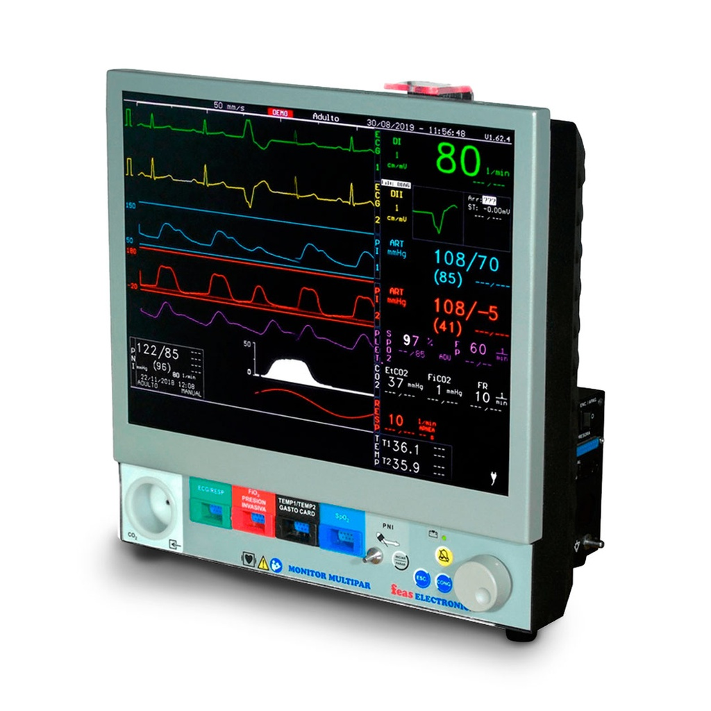
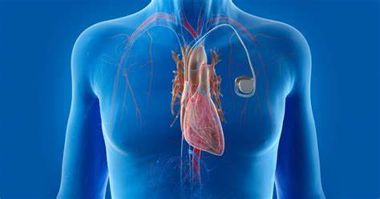

Microprocesadores en Medicina
Tecnología que salva vidas y transforma la salud
¿Cómo ayudan los microprocesadores en medicina?
Los microprocesadores son el núcleo de los equipos médicos modernos. Permiten el procesamiento de datos en tiempo real, la automatización de diagnósticos, el monitoreo constante de pacientes y la operación precisa de dispositivos implantables y robótica médica. Gracias a ellos, la medicina es más segura, rápida y personalizada.
Beneficios en la salud
- Diagnóstico más rápido y preciso.
- Monitoreo continuo de signos vitales.
- Automatización de tratamientos y dosificación.
- Funcionamiento seguro de marcapasos y desfibriladores.
- Cirugías asistidas por robots de alta precisión.
- Mayor seguridad y reducción de errores humanos.
Evolución de la tecnología médica
Galería de equipos médicos
Diagnóstico
Resonancias, tomógrafos y ecógrafos procesan imágenes complejas en segundos.

Monitoreo
Monitores y bombas de infusión regulan y alertan sobre parámetros vitales.

Implantables
Marcapasos y desfibriladores inteligentes salvan vidas cada día.

Robótica médica
Robots quirúrgicos y telemedicina permiten intervenciones precisas y a distancia.
¿Cómo se usan en la práctica?
Los microprocesadores están presentes en hospitales, clínicas y hasta en el hogar. Permiten la atención remota, el monitoreo continuo y la personalización de tratamientos.
La tendencia es hacia dispositivos cada vez más pequeños, conectados y autónomos.
¡La tecnología médica sigue avanzando para salvar más vidas!